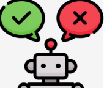
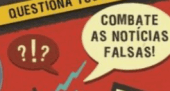
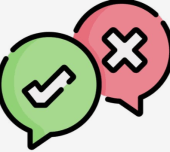

Principais Tipos de Fake News

Notícias Falsas ou Fabricadas
Exemplo: Uma notícia de que uma celebridade morreu em um acidente que nunca ocorreu.
Clickbait
Exemplo: Um título que diz "Você não vai acreditar no que aconteceu a seguir!" mas que, ao ser clicado, leva a um conteúdo irrelevante.

Misinformação
Exemplo: Um amigo compartilhando um boato sobre uma nova doença com base em um post que ele viu, sem verificar a fonte.

Teorias da Conspiração
Exemplo: A ideia de que vacinas causam doenças de forma deliberada para controlar a população.


Follow us